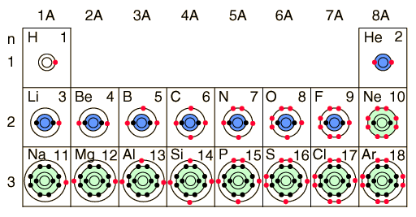

Electron Distributions Into Shells for the First Three Periods

A chemical element is identified by the number of protons in its nucleus, and it must collect an equal number of electrons if it is to be electrically neutral. As electrons are added, they fill electron shells in an order determined by which configuration will give the lowest possible energy. The first shell (n=1) can have only 2 electrons, so that shell is filled in helium, the first noble gas. In the periodic table, the elements are placed in "periods" and arranged left to right in the order of filling of electrons in the outer shell. So hydrogen and helium complete the first period.
The number of electrons in a given shell can be predicted from the quantum numbers associated with that shell along with the Pauli exclusion principle. The second shell, associated with principal quantum number n=2, can have a maximum of 8 electrons and corresponds to the second period of the periodic table. The third shell also has 8 electrons, but things get more complicated after than because the subshells spread out enough that there is overlap between them.
|
Index
Chemical concepts
Chemistry of the Elements
Periodic Table |